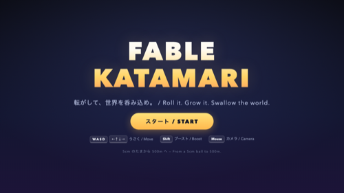
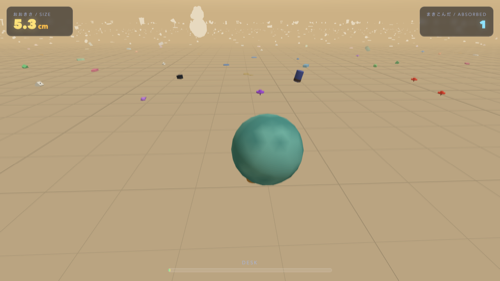

「シームレスに大きくなる塊魂」を一晩で所要 約2.5時間
ブラウザで動く3Dゲームを作ってほしい。塊魂みたいにオブジェクトを取り込んで成長する。成長したら一段階大きい視界へシームレスに移行する仕組みにすること。取り込みスケールが大きくなっても重くならないこと。ultracode（マルチエージェント）で実行し、全作業の思考・意思決定をログに残し、Cloudflare Pages に公開すること。
空っぽのフォルダから始めて約2.5時間。設計コンペ → 分担工事 → 検査 → デプロイの4フェーズを48体のエージェントで駆け抜け、「机 → 部屋 → 通り → 街 → 都市 → スカイライン」の6ティアを5cmから500mまでシームレスに成長するゲームが公開されました。外部素材ゼロ（3Dモデルも効果音も全部コードから生成）、バンドルはgzip後わずか154KBです。
最大の発明は「世界のほうを縮める」リスケール方式でした。ボールを無限に大きくしていくとコンピュータの数値計算が精度切れを起こすので、ボールが一定サイズに達した瞬間、世界全体を1/5に縮めてボールを元のサイズ帯に戻す。カメラも霧も全部が同じ比率で縮むため、縮めた前後の画面はピクセル単位で同一——プレイヤーには絶対に気づけません。
制作中の見どころエピソード
- 48種類のオブジェクトを全部コードで造形: 消しゴム、マグカップ、ネコ、消火栓、観覧車、クルーズ船……すべて箱や円柱の組み合わせ+頂点カラーで実行時に生成。ビルの窓は「乱数で一部の窓だけ明かりが点いている」演出までコードで焼き込まれています。最大の観覧車でも268ポリゴン、外部の3Dモデルはひとつも使っていません。
- 「拾えない塊魂」事件: 統合直後のスモークテストで、まっすぐ転がしても10秒間なにも拾えない問題が発覚。正直な球同士の接触判定は、見た目より当たり幅がずっと狭かったのです。レビューフェーズで「自分よりじゅうぶん小さい物には当たり判定を甘くする（大きい物への判定は正直なまま）」という連続的な救済ルールが入り、塊魂らしいバクバク食べる感触になりました。
- スマホで遊べない疑惑: レビューが「タッチ用ジョイスティックが存在するのに見えない、タイトル画面の説明もキーボード前提」と指摘。指の位置にリングとスティックが表示されるようになり、タッチデバイスでは説明文も差し替わるようになりました。


相似変換リスケールの数学
シミュレーションは常にボール半径 0.5〜2.5（シミュレーション単位）の狭い数値帯で行います。半径が2.5に達したフレームで、全座標・全速度・全半径に一様な相似変換 S = 0.2 を1フレーム内に適用し、ボールを0.5に戻します。「実際の大きさ」は倍精度の worldScale 変数で別管理し（リスケールごとに5倍）、HUD表示にだけ使います。
なぜ画面が一切変わらないのか: カメラ距離・フォグ距離・速度上限がすべて「半径の純関数」（例: カメラ距離 = 6.5 × r）だからです。rが0.2倍になればカメラ距離も0.2倍になり、相似な世界を相似な距離から見るので投影結果は同一。32bit浮動小数点の精度は常にフルに保たれ、理論上は成長の上限がありません。検証用に「強制リスケールキー + 前後スクリーンショットのピクセル差分」というテストまで設計に組み込まれており、v3最終検証では「差分は画面上部のタイマー数字のみ、ワールド描画はバイト単位で同一」が実測確認されています。
シームレス法則 — 「ティアは見た目だけを変える」
設計コンペで「遊び心地最優先」案から移植された、このゲームの憲法です。
ティア番号（机/部屋/通り…の段階）が変えてよいのは見た目だけ——出現する物のラインナップ、色のパレット、BGMのレイヤー、お祝い演出。一方、吸収判定・カメラ距離・フォグ・速度・消滅判定はすべて半径の連続関数でなければなりません。
こうすると「境界をまたいだ瞬間にゲームの挙動が変わる」ことが構造的に不可能になります。シームレスさを「頑張って違和感を消す」のではなく「違和感が発生し得ない構造にする」——閾値でゲームプレイが分岐しない限り、カクつきもワープも原理的に起きないのです。
物理エンジンを自作した理由
3つの設計案が全員一致で下した唯一の判断が「物理エンジンライブラリを使わない」でした。
このゲームで動く物体は実質ボール1個だけ。相手は全部、地面に置かれた静的な球（当たり判定用の近似）です。汎用物理エンジンの rapier（WASM 1.7MB、リスケールのたびに全ボディをテレポートさせると壊れる）や cannon-es（JSソルバが遅く、アーケード的な操作感の調整と喧嘩する）は「このゲームには存在しない問題」を解くための重装備でした。
自作したアーケード物理は約400行。固定60Hzの決定的なステップで動き、「ぶつかったら巻き込んだ物が1〜3個剥がれ落ちる」という塊魂の名物挙動もほぼタダで実装できました。何を使わないかの判断が、154KBという小ささと安定性を支えています。